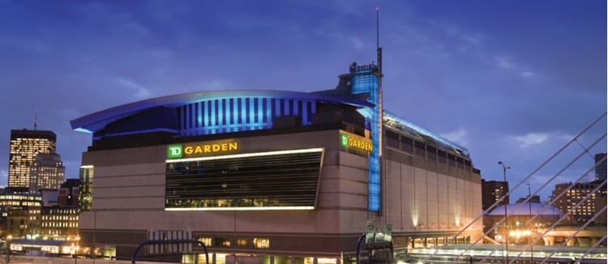

TD 가든

NHL 동부 컨퍼런스 애틀랜틱 디비전에 소속된 프로하키팀 보스턴 브루인스와 NBA 동부 컨퍼런스 애틀랜틱 디비전에 소속된 프로농구팀 보스턴 셀틱스의 홈구장이다.
1993년에 공사를 시작해서 1995년에 개장한 메사추세츠주 보스턴을 대표하는 실내 종합경기장이다. 수용인원은 농구 18,600명, 아이스하키 17,565명, 공연 19,600명이다. 건설비용은 1억 6,000만 달러가 들었으며, 1995년 9월 30일 첫 경기가 열렸다. 2014년 대대적인 레노베이션으로 예전보다 실내가 훨씬 밝아지고 깔끔해졌다. 레노베이션 과정에서 과거 1층에 있던 팀 스토어는 2층으로 이동하였다.
과거 구장 명칭은 쇼멋 센터(Shawmut Center), 플리트 센터(Fleet Center)로 불리다가 2005년에 TD 뱅크노스가 새롭게 명명권을 획득하면서 TD 뱅크노스 가든(TD Banknorth Garden)으로 불렸으며, TD 뱅크노스가 커머스 뱅크(Commerce Bancorp)를 합병하여 TD Bank, N.A.로 사명을 변경한 2009년 이후로는 TD 가든이라는 명칭으로 불리고 있다. 약칭하여 '더 가든(The Garden)' 또는 '보스턴 가든(Boston Garden)'이라고 부르기도 한다.
공항을 중심으로 하는 요식 서비스 및 엔터테인먼트, 리조트 종합 기업이자 보스턴 브루인스의 구단주이기도 한 댈러웨어 노스(Delaware North)가 소유하고 있는 시설이다.
MBTA 주차장 위에 새로 지은 5층 건물로, 142.64×91.44m, 높이 49.38m이며 엘리베이터 7대와 에스컬레이터 13대를 갖추었으며 MBTA와 암트랙 North station과 연결되어 있다. 농구, 아이스하키 외에 여러 고등학교·대학교팀의 경기 및 다양한 공연과 행사가 열린다.